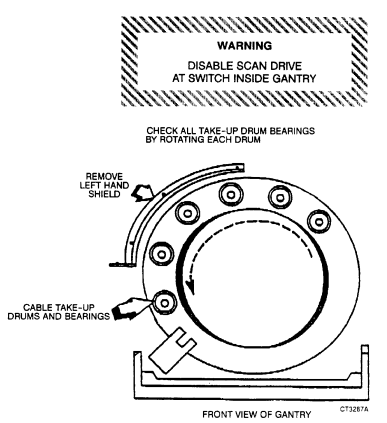

Operating Documentation
Direction 5112972-800, Rev# 2
CT Planned Maintenance Procedures
Operating Documentation |
| Required Persons | Preliminary Reqs | Procedure | Finalization |
|---|---|---|---|
| 1 | Timing Not Applicable | 15 mins | Timing Not Applicable |
Procedure Effectivity:
| Assembly: | GANTRY |
| Subassembly: | Gantry, Internal |
| Purpose: | Inspect Take-Up Drums |
| Last Revised: | July 1995 |
| Item | Qty | Effectivity | Part# | Manufacturer | |
|---|---|---|---|---|---|
| Standard FE Toolkit | 1 | - | - | - | |
| Item | Qty | Effectivity | Part# | Manufacturer | |
|---|---|---|---|---|---|
| Drum | 1 (if required) | - | 46-236148P1 | - | |
Remove both the Gantry side covers and disable the scan drive switch.
Open front and rear covers of Gantry.
Remove left side cable take-up cover as viewed from the front of the Gantry ( Illustration 1).
Rotate Gantry by hand to expose the six cable take-up drums. Rotate carefully so as to avoid hitting the E-stop hooks or accidentally tripping the E-stop.
Spin each drum by hand to check for free movement on the shaft.
Inspect the rubber surface of each drum for grooves and wear. A normal drum will show some grooving, but deep grooves or missing chunks of rubber is cause for replacement. Part # for the drum is 46-236148P1.
Re-assemble the system and verify normal operation.
Illustration 1: Cable Take-up Drum Inspection

No finalization required.